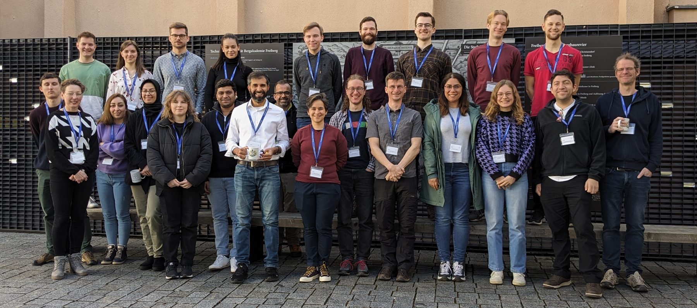
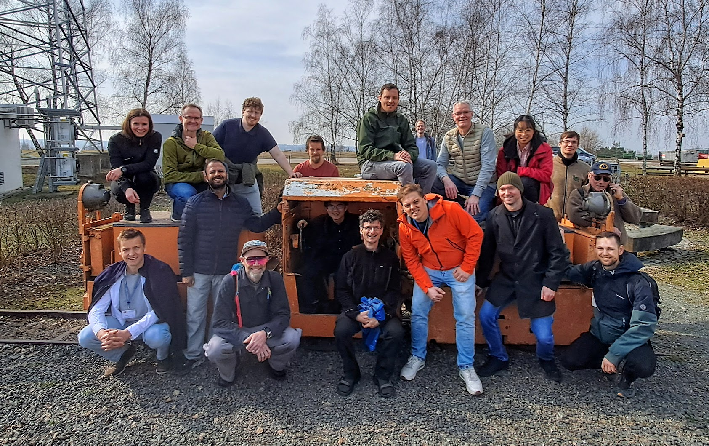

Community
MTEX is built by the people who use it
43 people have contributed code, the forum holds 1,400 discussions, and users have met at MTEX workshops since 2008.
Get help
Ask a questionThe forum on GitHub: questions, answers and announcements. Search it first, most questions have been asked before.
Report a bugEvery bug report is welcome. A few lines of code and a data set that show the problem help most.
VideosRecorded lectures and exercises from past workshops.
Write to usAnything that does not belong in the forum: ralf.hielscher@math.tu-freiberg.de

Meet us · Freiberg · March 2027
Workshop on Quantitative Microstructure Analysis
Two weeks with the developers and other users: lectures and exercises in the first week, your own data in the second, and an excursion into the Freiberg silver mine.
Programme and registrationTake part
Contribute codeNew functions, fixes and interfaces to further file formats, through pull requests on GitHub.
Improve the documentationEvery page has an edit link. Corrections, worked examples and explanations are all welcome.
Share a scriptHelper functions and analysis scripts from other users, and how to share your own.
Add-onsToolboxes built on MTEX, from slip transmission to finite element meshes.
Cite MTEXThe papers behind MTEX and its algorithms, and which one to cite for what.
The teamWho develops MTEX, and who has contributed.